有一件事，連王也命令不了
- 拿出示範皇冠放在講桌上。
老師可以說這是什麼？對，一頂皇冠。戴皇冠的人可以做什麼？……可以命令軍隊、可以叫人預備食物、可以決定很多事情。
有沒有一件事，是連王也沒辦法下命令的？
等孩子講完大衛是王。可是有一次，他的孩子生了很重的病。大衛沒有坐在王位上——他躺在地上，七天不吃飯，一直向神求。今天我們先摺一頂皇冠，等一下要在上面貼滿我們想跟神說的真心話。
界線不說「大衛把王冠拿下來」，經文寫的是他不坐王位、躺在地上（12:16）。
撒母耳記下 12:15-23｜失去孩子：誠實祈求、承認有限、帶著難過繼續生活
王冠，是這課最大的反差。課程範例第七段的第一組反差是「王的權力 vs. 人的有限」：前一課的大衛可以召人、發命令、調動軍隊，這一課他卻躺在地上，誰勸都不起來。孩子親手摺出一頂皇冠，一眼就知道「這是王的」；而貼滿皇冠的，全是王冠命令不了的事。
只寫一件事：把真心話告訴神。孩子不用分「這張寫祈求、那張寫交託」，只要回答一個問題：「如果可以跟神說真心話，你想說什麼？」寫一張、寫十張都可以。課程範例的三節點不靠「分欄寫」，而是讓同一頂皇冠跟著故事走三個動作：
寫——大衛在孩子還活著時，把真正的盼望告訴神（12:16、22「誰知道呢？」）。
放下——孩子死了，大衛承認「我能使他回來嗎？」（12:23）。全班把貼滿真心話的皇冠放到桌上：這些不全是我能控制的。
拿起來——大衛「從地上起來」（12:20）。皇冠拿起來時，便利貼還在上面：難過沒有消失，但我可以帶著它繼續生活。
皇冠是一個圈。課程範例提醒三節點不是步驟公式，真實的悲傷不是直線；皇冠沒有起點也沒有終點，回家以後想到新的真心話，可以再貼上去。
「放下王冠」是比喻，經文沒有寫大衛拿下王冠。經文寫的是他不坐王位、躺在地上（12:16）。跟孩子講時請說「大衛沒有坐在王位上」，不要說成「大衛把王冠拿下來」；把皇冠放到桌上，是我們自己的動作。
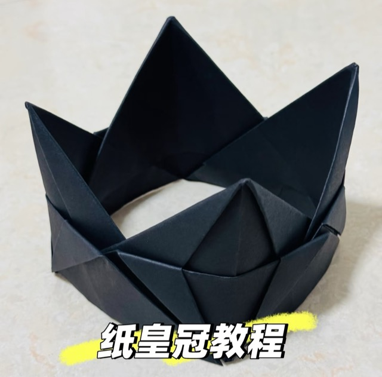
左：照片中的成品（五片拼成）。右：真心話便利貼可以貼滿皇冠。15 cm 色紙摺出的是放在桌上的小皇冠；想要戴在頭上，要換更大的紙、增加片數——請課前先試摺一頂確認尺寸。
記得大衛前後兩句話：孩子活著時「誰知道呢？」、孩子死後「我能使他回來嗎？」
能說出大衛孩子死後做的五件事：起來、洗澡、換衣、敬拜、吃飯。
願意寫下真正的盼望或擔心，不用寫「正確答案」。
知道真心話可以很多、可以很小，也可以每天再多貼一張。
禱告不是叫神一定照我的方法做。
不好的事發生，不一定是我的錯。
我可以還是很難過，也可以去吃飯、上學、玩。
| 數量 | 項目 | 說明 |
|---|---|---|
| 110 張 | 15 × 15 cm 色紙 | 每人 4 張、摺 4 片（25 × 4 ＝ 100），另備 10 張給摺壞的孩子換。選單色、稍厚一點的，太薄的皇冠站不住；金色或深色最像皇冠。約 NT$80–150。 |
| 4 本 | 小便利貼（混色） | 約 5 × 4 cm 的小尺寸，每人估 8–10 張。顏色不用分意義，混色比較好看。若只買得到 7.6 cm 方形，課前對半剪開（保留有膠的那一邊）。約 NT$100–200。 |
| 每桌 2 瓶 | 膠水 | 拼皇冠用：插進去的那一端塗一點點，插好壓住 10–20 秒。塗太多紙會濕軟、反而站不住。約 NT$100–150。 |
| 25 支 | 細字筆或鉛筆 | 便利貼很小，細字筆比彩色筆好寫。 |
| 1 張 | 大張示範紙 | 35 cm 以上的正方形（壁報紙裁切），老師在前面示範時全班看得到摺痕。 |
| 1 頂 | 老師示範成品 | 課前先摺好，貼上幾張老師自己的真心話，開場用。 |
| — | 估計 NT$300–480，依店家而異。剪刀不需要。 | |
老師自己先摺兩頂。第一頂學摺法、第二頂計時——你摺一片要多久，三年級孩子大約要兩到三倍。用買來的那批色紙試，順便確認幾片拼起來最好看、站得最穩。
每人發 4 張色紙，摺 4 片拼成一頂。15 分鐘摺 4 片對三年級來說偏緊，所以設計成「先一起摺第一片、之後自己重複」。課前請確認 4 片拼起來接得成一圈。
示範成品貼上老師自己真的真心話，其中一張摺起來貼在裡面。開場時可以說「老師也寫了好幾張，裡面那張我不會給你們看，那是給神的」，孩子會比較敢寫。
便利貼每桌放一疊，讓孩子自己拿。不要一張一張發——「想寫幾張都可以」要讓孩子看得到、拿得到。
時間不夠的備案：摺紙時間到了還沒完成的孩子，先用已經摺好的片數拼起來（3 片也可以是半頂皇冠），剩下的色紙帶回家摺。不要砍寫便利貼和放下、拿起來，那才是整份勞作的核心。
| 起 | 長度 | 單元 | 內容 |
|---|---|---|---|
| 00:00 | 2'00" | 開場步驟 0 |
|
| 02:00 | 15'00" | 摺皇冠步驟 1 |
|
| 17:00 | 6'00" | 寫真心話步驟 2 · 祈求 |
|
| 23:00 | 2'00" | 放下皇冠步驟 3 · 承認有限 |
|
| 25:00 | 3'00" | 拿起來步驟 4 · 繼續 |
|
| 28:00 | — | 教材：15 cm 色紙、小便利貼、膠水、細字筆、大張示範紙、示範成品 | |
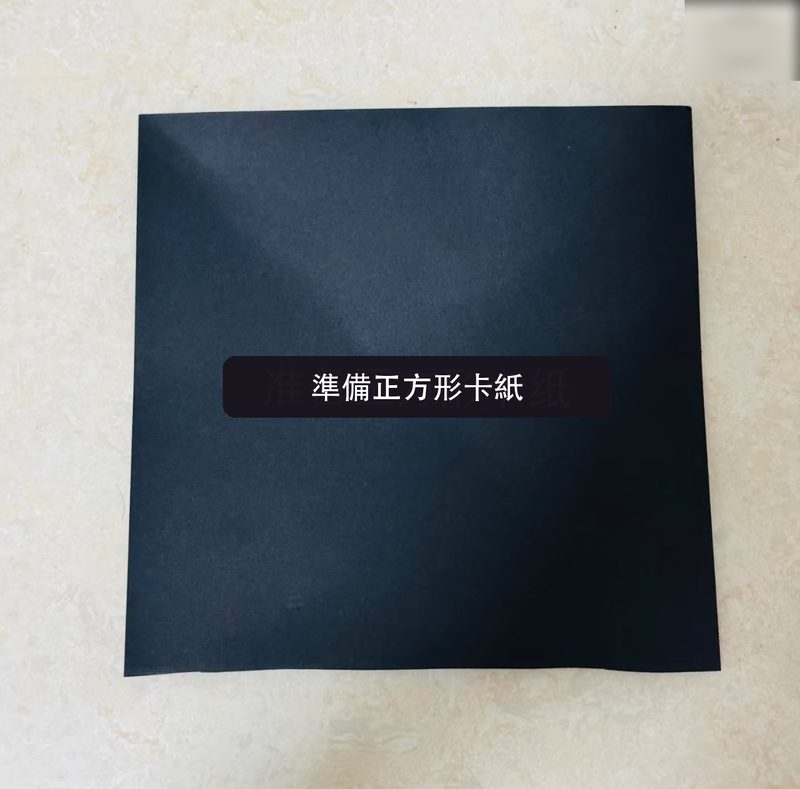
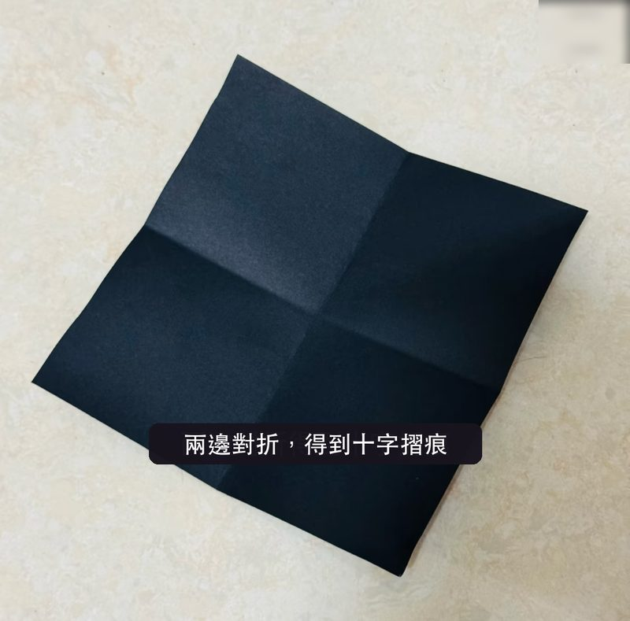
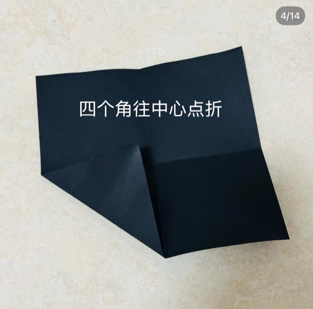
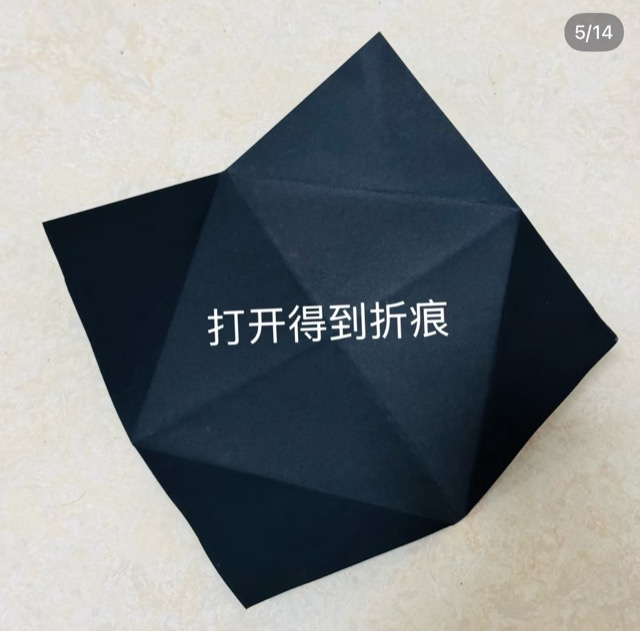
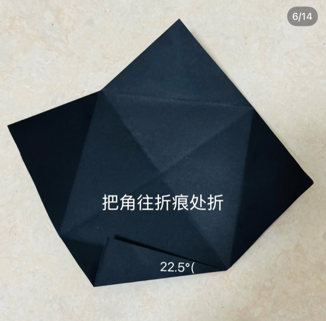
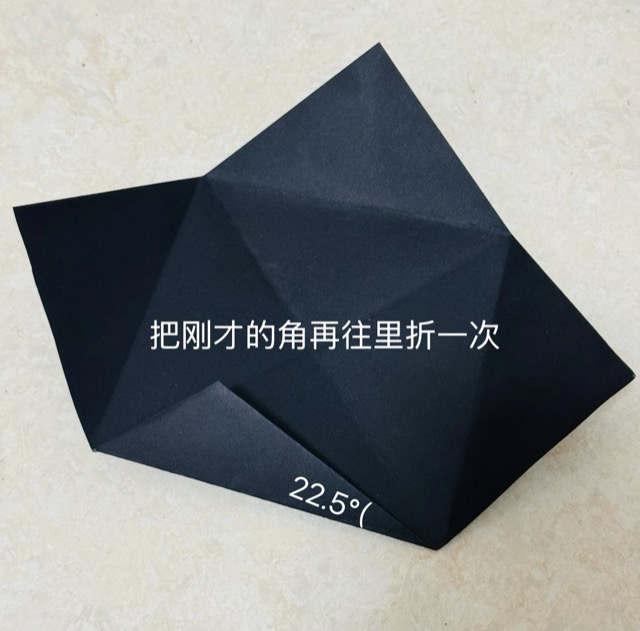
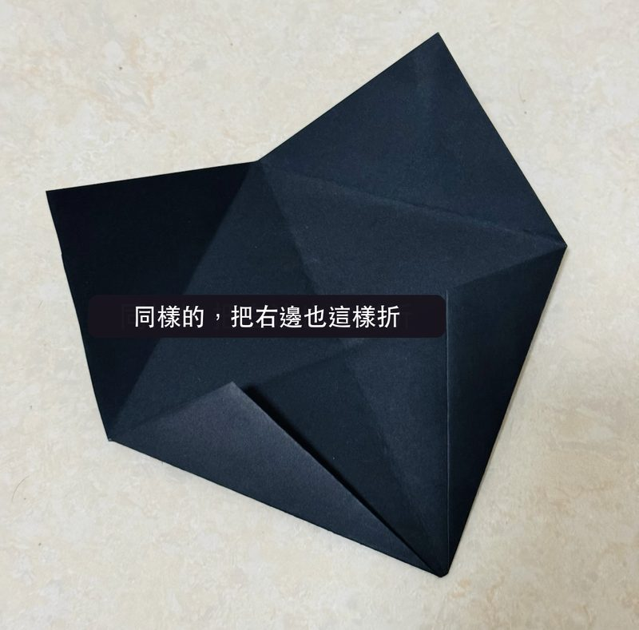
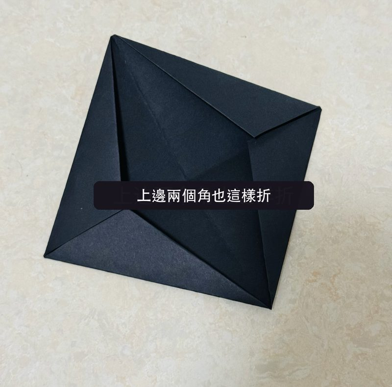
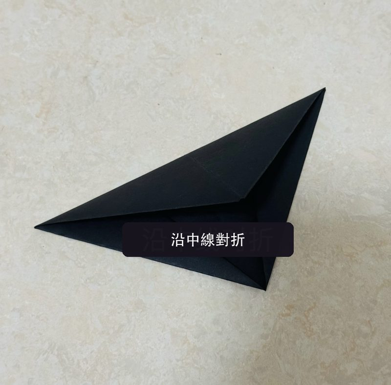
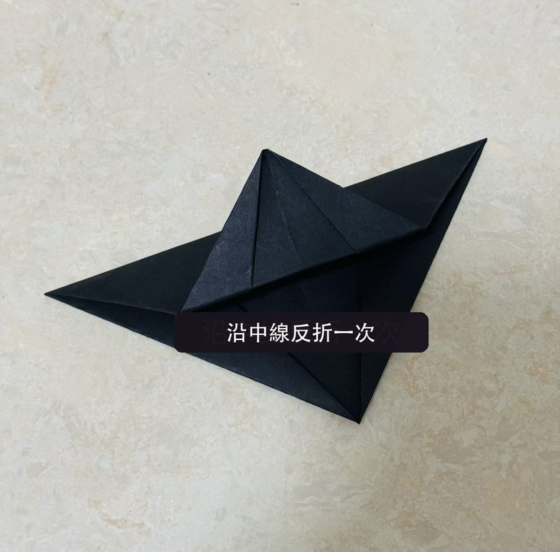
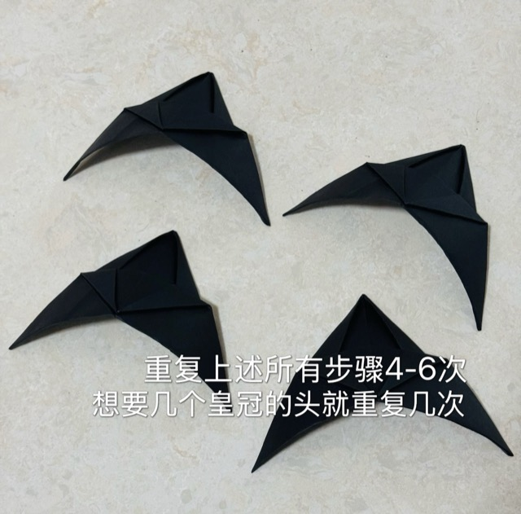
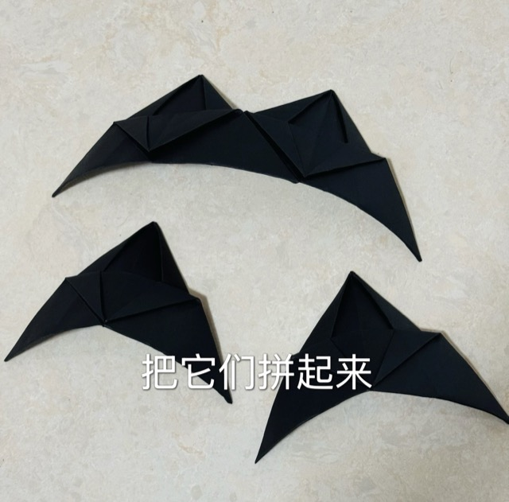
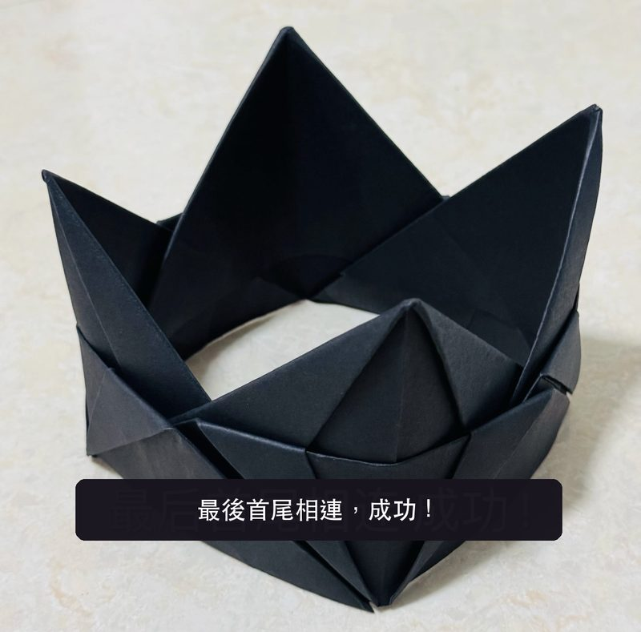
摺法照片取自小紅書 momo〈陳粒音樂節紙皇冠詳細教程〉（2025/6/3），圖上文字已改為繁體。框起來的 05、06 是孩子最容易卡住的地方：示範時放慢、多走一圈。
老師可以說這是什麼？對，一頂皇冠。戴皇冠的人可以做什麼？……可以命令軍隊、可以叫人預備食物、可以決定很多事情。
有沒有一件事，是連王也沒辦法下命令的？
等孩子講完大衛是王。可是有一次，他的孩子生了很重的病。大衛沒有坐在王位上——他躺在地上，七天不吃飯，一直向神求。今天我們先摺一頂皇冠，等一下要在上面貼滿我們想跟神說的真心話。
界線不說「大衛把王冠拿下來」，經文寫的是他不坐王位、躺在地上（12:16）。
一邊摺一邊可以說皇冠的每個尖角，都要摺好多次才會成形；一片一片插在一起，才站得起來。大衛平常坐在王位上，很多人聽他的。等一下你們會看到，這頂皇冠上要貼的，卻是另一件事。
時間17:00 一到就停。沒摺完的先用已完成的片數拼起來，剩下的色紙帶回家。後面的寫、放下、拿起來不要砍。
老師可以說孩子還活著的時候，大衛為什麼不吃飯、一直求？他說：「誰知道耶和華會不會恩待我，使孩子活著呢？」——事情還沒有結果，他就把心裡最想要的，真的告訴神。
如果可以跟神說真心話，你想說什麼？
接著這些是你跟神說的話。老師不會打開來看，也不會叫你唸出來。寫不出來也沒關係，可以只寫一張「神啊，我想跟你說話」。
界線不要講成「禱告夠認真，事情就會照你要的發生」。大衛說的是「誰知道呢」——是祈求，不是要求。巡桌時不要看孩子寫什麼，也不要比誰寫得多。
老師可以說到了第七天，孩子死了。臣僕都不敢告訴大衛……結果大衛自己起來了。臣僕問他為什麼，大衛說：「我能使他回來嗎？」——他承認，有一件事不是他能決定的，就算他是王。
接著看看你皇冠上的真心話。有些事你可以做，可是很多事，最後會怎麼樣，不是你能決定的。現在，我們一起用兩隻手，把皇冠放到桌上。
老師帶一句神啊，這些話我都告訴你了。有很多事不是我能決定的，我把它們放在你面前。
界線這不是「交給神，事情就會變好」，也不是「放下就不難過了」。是承認：結果不用扛在我身上。
老師可以說大衛後來做了什麼？……起來、洗澡、換衣服、去敬拜神、回家吃飯。這是不是代表他已經不難過了？
等一下——聖經有說他不難過了嗎？
等孩子回答沒有。他還是很難過，但他開始做生活裡原本要做的事。現在，請大家把皇冠拿起來。你看，上面的便利貼還在——難過不用先消失，我們可以帶著它，繼續吃飯、上學、玩。
帶一句話禱告神啊，謝謝你讓我可以跟你說真話。有些事情我真的很希望不一樣；有些事情不是我能控制的，我把它交給你。就算還有點難過，也求你陪我慢慢繼續。奉主耶穌的名，阿們。
最後一句把這頂皇冠帶回家，放在書桌上。它提醒你：我可以把真正的盼望和難過告訴神；不是每件事都由我控制。
界線不說「難過完要趕快振作」「有信心就不會難過」。可以說的是：「你可以難過」「你可以慢慢來」「很想念也沒有關係」。
所以大衛為這孩子懇求神，而且禁食，進入內室，終夜躺在地上。撒母耳記下 12:16 · 寫
大衛就從地上起來，沐浴，抹膏，換了衣裳，進耶和華的殿敬拜；然後回宮，吩咐人擺飯，他便吃了。撒母耳記下 12:20 · 拿起來
孩子還活著，我禁食哭泣；因為我想，或者耶和華憐恤我，使孩子不死，也未可知。孩子死了，我何必禁食，我豈能使他返回呢？撒母耳記下 12:22-23 · 寫、放下 · 課程範例最重要的兩句
「大衛做錯事，所以神讓孩子死掉；有人生病，一定是有人犯錯。」
這個故事裡，孩子的死放在大衛犯罪後果的敘事中，但不能推成所有疾病、死亡、意外都是某人的錯。勞作中完全不碰「犯罪」這條線，交給故事時間處理。
「禱告夠認真，神就會照你要的做。」
大衛已經非常迫切，結果仍沒有照他的期待發生。禱告不是叫神一定要照我的方法做——寫下真心話，和放下皇冠，要一起守住這件事。
「大衛很快就振作起來了，我們難過完也要趕快站起來。」
經文沒有說大衛不難過了。所以拿起皇冠時，便利貼是留在上面的：不是「我已經好了」，而是「我帶著它繼續」。
「神一定有祂的美意，以後你就會知道為什麼。」
課程範例提醒：經文沒有要求我們替每一個失去建立完整解釋。更誠實的話是：「我不知道為什麼會這樣，但你可以把你的難過告訴神。」
難過的時候，我可以向神說真話。
不是每件事都由我控制，不好的事不一定是我的錯。
我可以還是很難過，也可以慢慢繼續生活。
課前先問故事老師與小組長：班上最近有沒有孩子失去家人、寵物，或家人正在生病。有的話，安排一位老師坐在他旁邊，不點他回答、不請他分享。他寫多寫少、寫或不寫都可以。
便利貼真的不看、不打開。巡桌時眼睛看皇冠有沒有站穩就好。孩子主動拿給你看，可以說「謝謝你告訴我，要不要我陪你一起跟神說？」——但不要主動要求。
「放下皇冠」的 10 秒安靜，不要省。那是整份勞作唯一沒有在動手的時刻，也是孩子最接近大衛「躺在地上」的時候。可以請孩子把手放在腿上、眼睛看著自己的皇冠。
孩子在課堂上哭，不要急著說「不要哭」。可以說：「你可以難過，老師陪你。」這正是「帶著便利貼拿起皇冠」要教的事，老師在當下做出來，比寫在紙上更有用。課後請通知家長與小組長。
留意寫得特別多、或一張都寫不出來的孩子。兩種都不需要當場處理，但課後可以請小組長關心一下，那可能比勞作本身更需要被看見。
孩子問「為什麼是大衛犯錯，死的卻是孩子？」課程範例說：老師不需要用「因為神有主權」就把問題快速結束。可以回答：「這是一段很困難的經文，大人讀了也會難過，我們不用假裝它很容易。」再把話題帶回便利貼：大衛那時候做的，是把真話告訴神。
摺紙卡關的孩子，不要整片幫他摺完。摺法 05、06 最容易卡，老師幫他壓好那一步、讓他自己摺完其他的。15 分鐘到了，用已完成的片數先拼起來就好。
哪些取自課程範例、哪些是另外設計的。三節點、兩句關鍵經文、教學界線、Q&A 的回答方向、「轉成孩子聽得懂的話」取自 11 月課程範例〈失去孩子〉。摺紙皇冠、真心話便利貼與「寫—放下—拿起來」的動作，是依範例方向另外設計的。